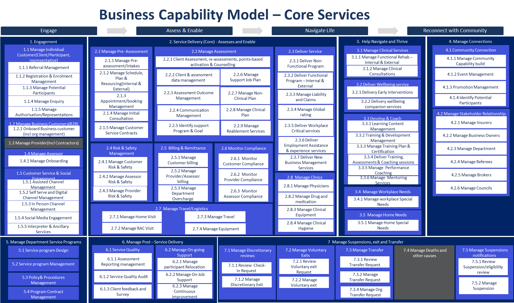
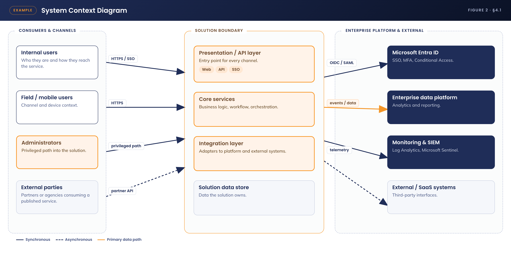
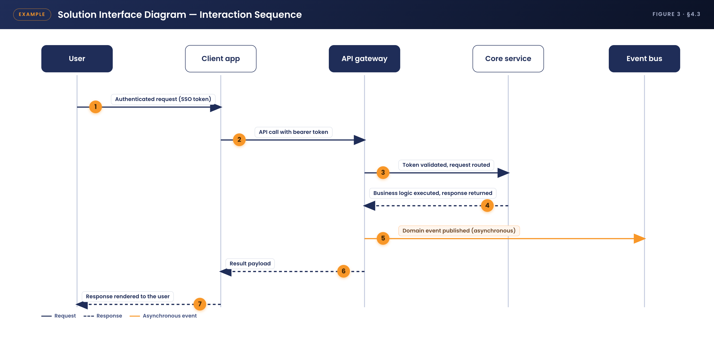
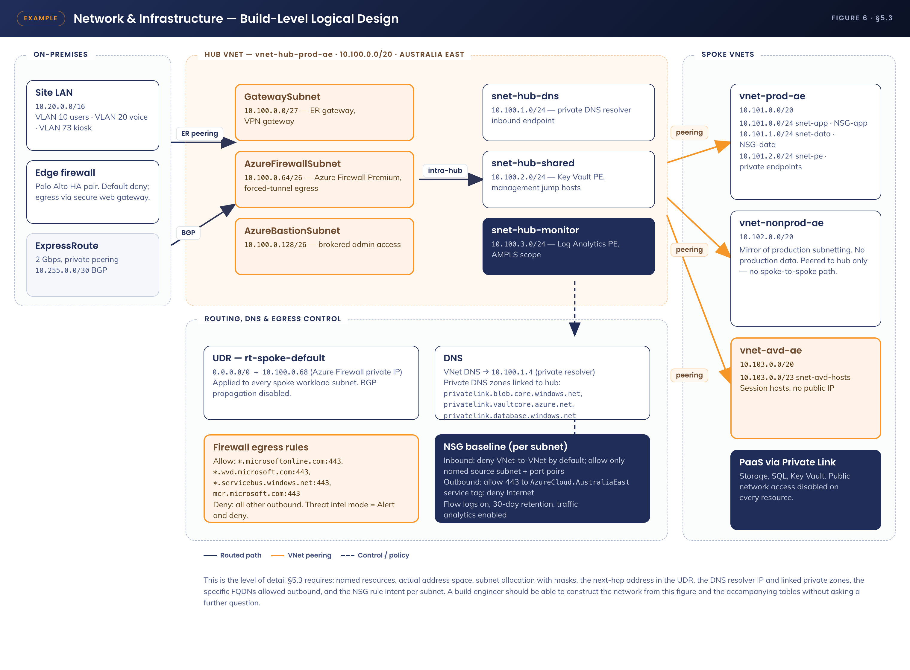
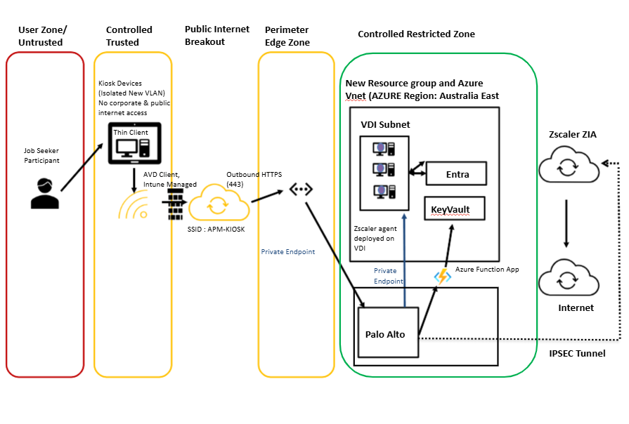
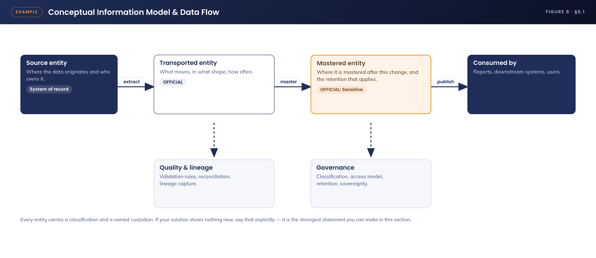
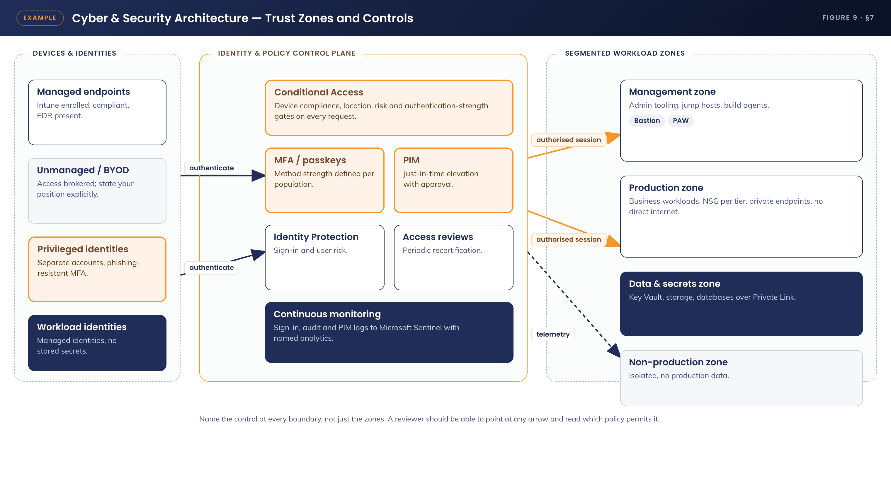

Document control
Version history
| Version | Date | Author | Key changes |
|---|---|---|---|
| V0.1 | DD-MM-YYYY | Author name, role | Initial draft for consultation |
Consultation
Guidance - list everyone consulted during the design, including architecture and security reviewers.
| Name | Position / role | Date |
|---|---|---|
| Name | Position title | DD-MM-YYYY |
References and derivation
| Version | Document title | Reference location |
|---|---|---|
| V1.0 | Related document title | SharePoint / repository path |
Approval
| Name | Role / group | Action | Signature | Date |
|---|---|---|---|---|
| Name | Solution Design Authority | Approval |
Confidentiality & disclaimer
This document is provided by Advanced Personnel Management International Pty Ltd and / or its related entities (APM) on a confidential basis. It does not constitute an offer capable of acceptance, and no agreement binding APM or its related companies is intended or proposed unless and until agreed in writing in a formal agreement. Photographs used in this document are for illustration only. Communications regarding this document should be forwarded to the Head of Digital Transformation & Architecture.
Contents
- Introduction - purpose, audience
- Overview - scope, guiding principles, assumptions, dependencies
- Risks, issues & design decisions
- Business architecture - reference architecture, requirements, gap treatment
- Application architecture - system context, components, interfaces
- Technology architecture - standards, integration, network & infrastructure, firewall
- Information & data architecture - model, classification, analytics
- Cyber & security architecture
- Service availability & disaster recovery
- Service management & supportability
Appendix A - Terms & abbreviations · Appendix B - Implementation considerations
1. Introduction
1.1 Purpose
Guidance - state what this document defines and the decisions it records. Use the SoW or business case for framing.
This document provides the detailed technical design for the solution. It records the agreed architecture, configuration and design decisions, and is the reference for build, test and operational handover. It is a living document and must reflect the production environment in its entirety.
1.2 Audience
| Audience | Interest in this document |
|---|---|
| Architecture & design authority | Review and approval of the design |
| Cyber security | Control alignment and risk acceptance |
| Build & operations teams | Implementation and ongoing support |
2. Overview
2.1 Scope
IN SCOPE
- Item included in this design
- Item included in this design
OUT OF SCOPE
- Item explicitly excluded
- Item explicitly excluded
2.2 Guiding principles
Guidance - the principles that shaped the design, e.g. modern management only, least privilege, cloud-first.
- Principle one
- Principle two
2.3 Assumptions
| Ref # | Assumption |
|---|---|
| A-01 | Assumption the design relies on |
2.4 Dependencies
| Ref # | Dependency | Owner |
|---|---|---|
| D-01 | What must be in place for this design to land | Owning team |
3. Risks, issues & design decisions
3.1 Project risks
| Ref # | Risk description | Severity | Probability | Mitigation |
|---|---|---|---|---|
| RK-01 | Example - upstream network design not approved before build window opens | High | Medium | Escalate via design authority; sequence non-dependent work first |
| RK-02 |
3.2 Issues and concerns
Guidance - issues raised in architecture and security reviews, plus unusual requirements. Unresolved issues carry into the project risk register.
| Ref # | Issue description | Resolution |
|---|---|---|
| IS-01 |
3.3 Design decisions
Guidance - duplicate the decision card above for each major design decision (DD-02, DD-03…).
4. Business architecture
4.1 Business reference architecture

4.2 Business requirements
| Unique # | Category | Key requirement |
|---|---|---|
| BR-01 | Functional | What the business needs the solution to do |
| NFR-01 | Non-functional | Availability, performance, security or compliance requirement |
4.3 Gap treatment
Guidance - where the solution does not fully meet a requirement, record the gap, its impact and the agreed treatment.
5. Application architecture
5.1 System context diagram

System context diagram - insert here
Show the solution, its users, and every external system it touches
5.2 Solution component inventory
| Component | Function | Version | Environment |
|---|---|---|---|
| Component name | What it does in the solution | vX.Y | Production |
5.3 Interface catalogue

| Ref # | Source → destination | Method / protocol | Data exchanged |
|---|---|---|---|
| IF-01 | System A → System B | HTTPS / REST API | What flows, how often, auth method |
6. Technology architecture
6.1 Technology component standards
Guidance - the platform standards this design builds on (identity, device management, hosting, tooling) and any deviations.
6.2 Network & infrastructure


Network zones used by the solution:
| Description | VLAN | IP range | Subnet |
|---|---|---|---|
| Example - kiosk device VLAN | 73 | 10.x.x.0–10.x.x.255 | /24 |
6.3 Infrastructure specification
| Attribute | Value |
|---|---|
| Server / resource name | |
| OS / platform | |
| Location / region | |
| Memory / storage | |
| IP / subnet / gateway / DNS |
6.4 Firewall & internet access
Guidance - summarise required firewall policies (full rules belong in the appendix or a linked spreadsheet) and whether the solution needs internet egress, via what path.
| Ref # | Source | Destination | Port / protocol | Purpose |
|---|---|---|---|---|
| FW-01 | Solution VLAN | Service endpoint | 443/TCP | Why the flow is needed |
7. Information & data architecture
7.1 Information model
Guidance - the key information entities the solution creates or consumes, where each is mastered, and how it flows.

7.2 Information classification
| Data component | Classification | Storage location & protection |
|---|---|---|
| Data set or store | OFFICIAL: Sensitive | Where it lives; encryption at rest / in transit; retention |
7.3 Analytics & reporting
Guidance - reporting outputs, audit logging, and any SIEM export requirements.
8. Cyber & security architecture

8.1 Security principles alignment
| # | Principle | Compliant | Comment |
|---|---|---|---|
| SEC-1 | Minimise the attack surface | Yes | How the design achieves it |
| SEC-2 | Defence in depth | Yes | |
| SEC-3 | Least privilege | Partial | Gap and treatment |
8.2 Identity & access management
Guidance - authentication and authorisation model, RBAC roles and group mapping, Conditional Access, segregation of duties.
8.3 Certificates, keys & secrets
Guidance - cryptographic material the solution depends on, where it is stored (e.g. Key Vault), rotation and expiry ownership.
9. Service availability & disaster recovery
| Attribute | Value |
|---|---|
| Business service tier | Tier and rationale |
| Availability target | e.g. 99.9% business hours |
| RTO / RPO | Recovery time / point objectives |
| DR approach | How service is restored after regional or component failure |
10. Service management & supportability
10.1 Monitoring, logging & alerting
| Layer | What is monitored | Tooling | Alert routing |
|---|---|---|---|
| Application | |||
| Infrastructure | |||
| Cyber / SIEM |
10.2 Backup, patching & maintenance
Guidance - backup and restore approach, update rings and patch cadence, maintenance windows, and the remote access path for support.
A. Appendix A - Terms & abbreviations
| Term / abbreviation | Definition |
|---|---|
| AVD | Azure Virtual Desktop |
| DDD | Detailed Design Document |
B. Appendix B - Implementation considerations
Guidance - sequencing constraints, cutover notes, and anything the build team must know that doesn't belong in the body sections.